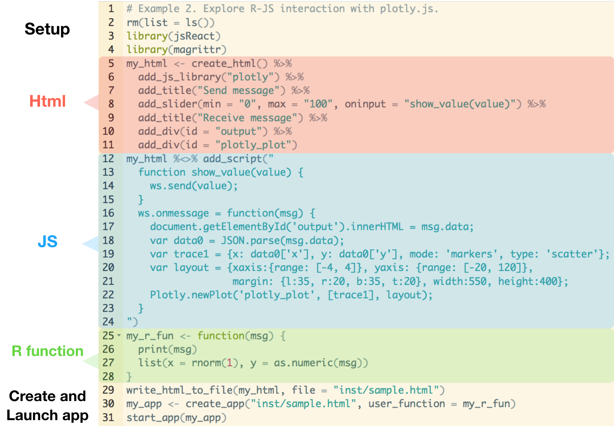

Tutorial 2: Interactive plotting
Jackson Kwok
2017-11-15
1.1 Introduction
Introduction
In this example, we study a way to trigger an event in the browser and update a plot interactively. The goal is to create apps that allows for smooth transition (more so than Shiny!). This is the app we are going to make:

The app displays a point with a randomly generated x-coordinate and a y-coordinate controlled by the slider.
Outlook
After this tutorial, you can proceed to example 8 and example 8b:

I hope you are convinced that while they look different, they are really the same as this example just with different data. In those examples, we will leverage the tweenR package and the technique we go through in this tutorial to create the animation effect.
1.2 Design
The code for this tutorial can be found here.
1.2.1 App interface
Let’s inspect the interface:

In terms of interface, this app is largely the same as the one we saw in tutorial 1. The only difference is the additional container at the bottom, in which we will make aplotly plot.
1.2.2 Code
It is no surprise that the code for this app is similar to tutorial 1! 
In fact, there are only 8 new lines in this file. Alright, let’s break the codes into four parts again and inspect each of them.
Html
Lines 6 and 11 are the new lines.
Line 6: Since we are going to make a
plotlyplot, so we need to include the library in the html file.Line 11: Use
add_divagain to add a container and give it anidfor future reference. This is where we will place ourplotlyplot into.
Javascript
Lines 18-22 are the new lines. These lines produce the plotly plot using data received from R.
Line 18: Standard command to parse the data from R (as mentioned in tutorial 1).
Line 19-20: Commands to construct the plot. These are from the plotly.js website (simply apply your supreme copy-and-paste skill).
x,yrefers to the data,mode: 'markers'suggests points, andtype: 'scatter'suggests scatter plot. (This uses the grammar of graphics.)Line 21: Actually making the plot.
[trace1]is plotted in the container with idplotly_plotaccording tolayout. Note thatlayoutis optional, if you don’t supply that, plotly will use its default.

1.2.3 Simple modification
If you don’t like the idea of sliders, we can remove that and replace it by a timer to send some random data to R a few times a second (so that the plot updates by itself). The timer function is given by setInterval(fun, t). It calls the function fun once every t milli-secs. (Note that once every 100 milli-seconds = 1 second 10 times.)
var myVar = setInterval(animate_frame, 100);
function animate_frame() {
ws.send(60 + Math.random() * 10);
}For simplicity, we just insert this code at the beginning of the Javascript, keeping the slider in the app. This is what we get:

1.3 Summary
In this tutorial, we have learnt how to make a plotly plot using JS and have it respond to slider events.
For the html part, we added the
plotly.jslibrary usingadd_js_libraryand an extra container usingadd_div.For the JS part, we made a plot using functions from the
plotly.jslibrary. This requires very little work as we simply modified code extracted fromplotly.jsexample webpage!For the R part, we made R return a list of x, y coordinates.
As an extension, we learnt about timer events triggered by setInterval(fun, t), which runs the function fun once every t milli-seconds. Overall, this tutorial prepares us for animation-type visualisation. From here one could head to example 3, where we will learn about another JS library (p5.js) to create some common visual effects, or example 8, where we will create animated plots using simulated / real data. See you in the next tutorial!